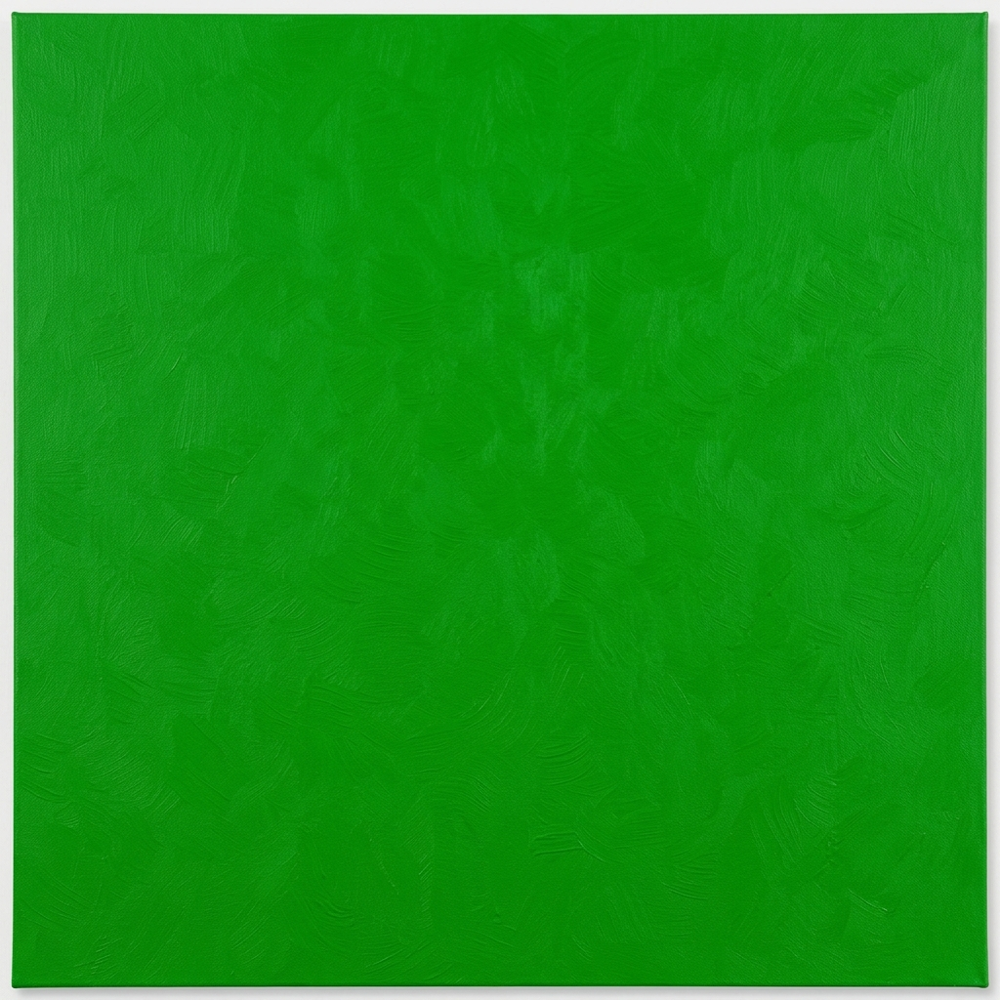
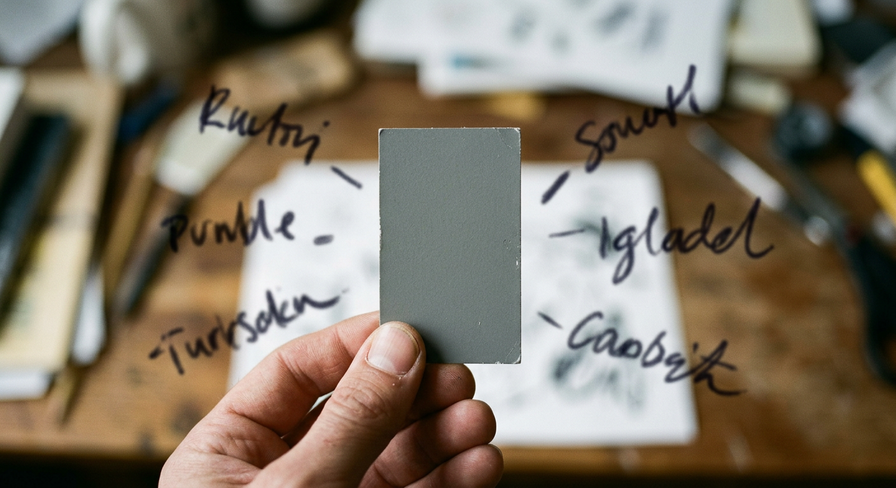

3A million people, five color words, and a map of where English consensus holds — and where it splinters along lines drawn by language, biology, and the screen itself.
4By the data2blog pipeline · April 20265Source: Randall Munroe / TidyTuesday 2025-07-08
6A million people, one of five words
In April 2010, Randall Munroe — author of the webcomic xkcd — asked the internet to name colors. 8Visitors saw a patch of RGB and typed whatever came to mind. 9Over five million names came in across 222,500 sessions. 10Fifteen years later, a curated slice of that experiment landed in TidyTuesday, and we can ask the question Munroe could only sketch in a blog post: when the same English-speaking population looks at the same color, when do they agree, and when do they not?
The slice is large. 11There are 949 colors in the canonical published list, 152,401 users with self-reported demographics, and 1,058,211 individual answers. 12To keep the file tractable, only one kind of answer was kept — the cases where the user typed one of the five most popular color words: purple, green, blue, pink, brown. 13Every row of the answers file is one human, one hex code, one of those five letters.
14Among the million answers: green is the modal name 29.7% of the time, blue 27.2%, purple 23.6%, pink 12.4%, and brown 7.2%. 15Green and blue together cover 57% of the displayed-color space — they are the dominant naming territories. 16Brown and pink share the remaining warm wedge.
2
19ana_09">17Share of each top-5 color name among 1,058,211 answers. 18Bars are tinted with the canonical xkcd hex of each name. ana_09
20How a name carves out a region of color space
If you bin the displayed hue into 10° slices and ask, in each slice, what fraction of users gave each name, you get a sharp picture: green dominates 80–140° at over 97%; blue owns 180–230° at over 90%; purple peaks above 95% near 280°; pink takes 320–340° above 90%. Brown lives in the warm wedge from 8° to 91°. 23The transitions are short: from "almost all green" to "almost all blue" takes maybe twenty degrees of hue.
24Each name's center of mass sits roughly where you'd expect. Brown is dim and warm — median hue 31°, value 0.54. 26Pink is the only name that lives in the bright pastel corner — median value 0.92. 27Blue and green have nearly equal saturation and brightness; what separates them is just hue. 28The 5th-to-95th-percentile hue ranges of the five names tile the color wheel with narrow overlaps: brown (8–91°), green (74–158°), blue (178–257°), purple (252–327°), pink (15–352° — the only wraparound).
29In other words, color names are not labels stuck to fixed points. 30They are claims to territory.
3
33ana_12">Stacked area: within each 10° hue bin, what fraction of users gave each top-5 name. 32The horizontal strip below is the actual hue spectrum. ana_12
34Most of the cube is settled
Slice the RGB cube into 12×12×12 = 1,728 cells (each cell ~21 RGB units wide), keep the 1,606 cells with at least 50 answers, and ask: how dominant is the modal name in each cell? 36The mean winner share is 88.6%; the median is 95.8%. 37Half the cells have a name that wins by 95% or more. 38Only 14 cells (0.87%) drop below 50% winner share.
39At the bullseye of each region, agreement is essentially perfect. RGB (10,176,10) — a vivid mid-green — got "green" from 1,473 of 1,473 different users. RGB (10,160,224) — a saturated sky blue — got "blue" from all 805 users who saw it. 42Pure pink at #f58a8a hits 99.9%; pure brown at #a04a0a, 100%.
43The settled territory is the rule, not the exception. 44Roughly 95% of the well-sampled color cube has a clear winner. The disagreements live in the remaining 4–5%.
des_03_callout4695.8%47Median winner-name share across 1,606 well-sampled RGB cells. 48Half of color space is named the same way by 96% or more of viewers.
54ana_13">12×12×12 RGB cube binned into name-territory slices. Each small grid is one Blue-channel slice (B = 0 to 233). 52Cell fill = the cell's actual displayed RGB; cell border = the winner name. 53Hover any cell to see the full breakdown. ana_13
The boundaries — where naming breaks down
56The contested cells trace every boundary on the color wheel. 57The single most ambiguous cell is true mid-grey, RGB (96,96,96): 33.9% purple, 25% brown, 23.2% blue, 16.1% green, 1.8% pink. 58With no anchor, the brain reaches in every direction. 59Just behind it sits #b58a8a (a dusty rose-grey: 35% purple, 32% pink, 31% brown — three names within four points of each other) and #75f5ca (a cyan-green: 50% green, 49% blue — perhaps the cleanest binary tie in the dataset).
des_04_a
60One stretch of the boundary is famous in its own right. The pink-purple line — the region where fuchsia, magenta, and hot pink all live — has been a folk argument for as long as people have argued about colors on screens. 62The xkcd data resolves it. At hue 280° pure purple wins 95.4% of the time. At 300°, purple still wins 88.2%. By 320° pink takes over with 69%, and by 340° pink owns the territory at 90.5%. The crossover is around hue 310°. At the canonical "magenta" hue (~322° in xkcd's lexicon), the public votes pink over purple by roughly 2 to 1.
des_04_b
70ana_22">68The pink-purple crossover. The "fuchsia line" sits near hue 310°. ana_22
71Two X chromosomes name color slightly differently
72Aggregate over all 1,045,000 cleanly-typed answers (spam_prob < 0.5) and split by self-reported chromosome. 73Users with one Y chromosome say "blue" 26.42% of the time; users with two X chromosomes say "blue" 28.59%. 74The 2.17-percentage-point gap is the largest single-name difference. 75XX users say "green" slightly less (28.90% vs 30.05%) and "purple" slightly less (23.11% vs 23.84%). 76The differences are small, robust, and directionally consistent with prior linguistic research showing women apply finer green/blue distinctions.
77At the cell level the median XY-vs-XX divergence is just 0.017 — most cells are named identically. 78But about 4% of well-sampled cells diverge by more than 0.20. 79The single most divergent cell, #203535 (a dark teal-grey), has 68% of XY users saying "green" while 65% of XX users say "blue". 80Other strongly divergent cells sit in pink/purple/brown borderlands where XX users converge harder on a single name and XY users spread their answers more evenly.
6
83ana_17">Difference XX − XY in the share of each top-5 name (percentage points). 82Positive bars: XX more likely to use that name. ana_17
84One caveat eats half the chromosome story. 85Among users with spam-probability above 0.75, 81.5% are XY — almost ten percentage points above the 71% baseline XY share. 86Munroe's 2010 quip ("the most masculine color names were 'penis', 'gay', 'WTF', 'dunno'") was real, and its statistical shadow falls across any naive XY/XX comparison. 87The aggregate 2-pp gap on "blue" and the 0.04-mean cell divergence are reported here only after stripping high-spam users. 88The patterns survive that cut. 89They probably wouldn't survive much more.
des_05_callout9081.5%91Of users with spam-probability above 0.75, this fraction has a Y chromosome — ten percentage points above the 71% baseline. 92Spam and chromosome are tangled.
93The colorblind fingerprint
94Now split the same 1.04 million answers by the colorblind self-report. The cell-level mean naming divergence triples — from 0.040 (XY vs XX) to 0.117 (colorblind vs not). 96Aggregate: colorblind users say "green" at 32.16% (+2.62 pp), "pink" at 15.60% (+3.36 pp), and "purple" at just 17.99% (−5.94 pp). 97Where non-colorblind users see purple, colorblind users see pink.
98The cell-level signal is the strongest finding in the dataset. At RGB ~(181,160,202) — a soft lilac — colorblind users say "pink" 56.5% of the time while non-colorblind users say "purple" 87.4%. 100At #cab5e0 (lavender-ice) the swap is 52% pink vs 82% purple. At #203520 and #20350a — two dark, slightly green-tinged shades — colorblind users say "brown" while non-colorblind users say "green" with 96–97% conviction. 102Both shifts have a clean physical explanation: red-green color blindness compresses the perceptual gap between purple and pink (both have red components) and between dark green and brown (both are dim warm-leaning).
des_06_a
des_06_b
105ana_19">103Difference between colorblind and non-colorblind aggregate share, in percentage points. 104Purple drops nearly 6 points; pink rises 3.4. ana_19
106The colorblind subsample itself is unusual. 107Population studies put red-green color blindness at roughly 8% of XY individuals and 0.5% of XX — a 16x ratio. 108In the xkcd data the rate is 4.99% in XY and 1.085% in XX, a ratio of 4.6x. 109The xkcd colorblind users are far fewer than a representative sample would suggest, almost certainly because XY users with mild deficiency don't categorize themselves as "colorblind" while XX users at the curious end self-select in. The naming differences are still real — but the population they're estimated on is not the general population.
111A small but visible monitor effect
112In 2010 the survey caught the tail end of the CRT-to-LCD transition. 11395.8% of users were on LCDs, 3.9% on CRTs. 114The same color rendered on the two technologies looks subtly different — phosphors versus backlit liquid crystals — and the naming follows. 115CRT users say "green" 32.67% of the time vs 29.58% on LCD (+3.09 pp), say "brown" 8.53% vs 7.13% (+1.40 pp), and say "pink" 10.21% vs 12.50% (−2.29 pp). 116On warmer, dimmer CRTs, ambiguous pinks read as browns or reds; greens look more saturated.
117The effect size is smaller than the chromosome effect, smaller still than the colorblind effect, but cleanly directional — and it's a useful reminder that "the color we see" is always partly a property of the screen.
8
119ana_21">118Aggregate share of each top-5 name on LCD vs CRT monitors. Faded bars are CRT. ana_21
120A vocabulary, not a list
121Behind the million answers sits the canonical 949-color list — the part of this dataset that has had a real cultural afterlife. 122Purple is rank 1, green 2, blue 3, pink 4, brown 5, red 6. 123The first 30 entries are dominated by basic English color terms and a small set of culturally entrenched secondary names: teal, magenta, turquoise, lavender, mauve, maroon, olive.
des_08_swatches
1241 · purple
1252 · green
1263 · blue
1274 · pink
1285 · brown
1296 · red
1307 · light blue
1318 · teal
1329 · orange
13310 · light green
134The 949 named hexes do not tile the color wheel evenly. 135Yellow leads with 152 named colors (a long compositional family: gold, mustard, ochre, butter, lemon, banana). The saturated purple wedge — between blue and magenta — has just 47. 137The achromatic axis has 11: black, white, six greys, charcoal, silver, "very light pink".
13872.5% of the names are multi-word compounds. 139The most productive modifiers are light (67 names), dark (60), pale (28), bright (23), deep (17). 140The most productive heads are green (170 names end in "green"), blue (110), pink (52), purple (47), brown (44). English compounds colors compositionally — and green and blue together anchor 280 of the 687 compound names, more than 40% of the multi-word vocabulary.
9
142Top compound-name modifiers (left) and the words they qualify (right). 14372.5% of all 949 named colors are multi-word. 144ana_06, ana_07
145These 949 colors and their hex codes are now baked into the visual culture of computing. 146matplotlib's "xkcd:" palette, R's xkcdcolors package, design tools, and academic visualization papers all reference them. The survey's quirks — the over-representation of dusty pastels, the dominance of compound names, the absence of culturally specific colors common in other languages — have been quietly inherited by every chart that uses xkcd:cerulean.
148What 1,473 people called green
149At RGB (10,176,10), one specific patch of the green territory, 1,473 different humans on different monitors with different chromosomes and different colorblindness profiles all typed the same word. They typed "green". 150Not "leaf green", not "kelly green", not "bright green" — those answers existed and were filtered out of this dataset. 151They typed the basic word.
152At RGB (96,96,96), a different specific patch, 56 humans typed five different words. 15319 said "purple". 15414 said "brown". 15513 said "blue". 1569 said "green". One said "pink".
10

157RGB (10,176,10)
1581,473 / 1,473
159people called this color green. 160No one called it anything else.

161RGB (96,96,96)
16256 / 5 names
163purple 33.9%
164brown 25.0%
165blue 23.2%
166green 16.1%
167pink 1.8%
168The xkcd Color Survey is the rare project where the boring part — that 95% of color space is named the same way by almost everyone — is not the finding to discount. 169It is the foundation against which the small, specific, biologically and physically explicable disagreements show up at all.